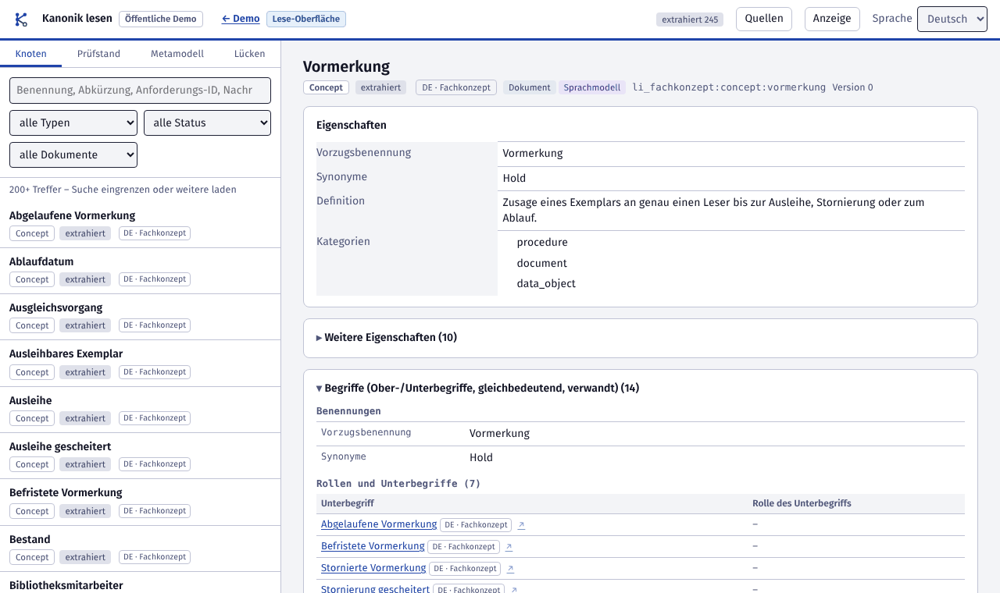

Vom Fachkonzept zum Code – und zurück
Kanonik liest ein Fachkonzept, die BPMN-Prozesse und den Quellcode einer Anwendung und gleicht die drei Sichten gegeneinander ab. Heraus kommen ein kuratierbarer Knowledge Graph (Wissensgraph) und eine Liste von Lücken: Was das Fachkonzept verlangt, aber Prozess oder Code nicht umsetzen – und umgekehrt.
Damit wird die Spezifikation wieder zur Quelle der Wahrheit, wie es Spec-Driven Development verlangt: Jede Anforderung bleibt mit ihrer Stelle im Dokument, den Begriffen, Regeln und Prozessen und den Klassen im Code verbunden – nachverfolgbar in beide Richtungen.
Die Beispiele unten beruhen auf frei verfügbaren Open-Source-Projekten. Jede Lücke führt zur Stelle im Fachkonzept.
Mehr dazu: Knowledge Graph und Spec-Driven Development.
Domänen

Kino: Kartenreservierung
Platzprüfung, Ersatzplätze, Zahlung und Ticketversand – Fachkonzept gegen Camunda-8-Prozess und Java-Code.

Online-Handel: Bestellabwicklung
Bestellung, Zahlung, Lager und Versand – Fachkonzept gegen BPMN-Prozesse und Kafka-Microservices.

Bibliothek: Ausleihe
Vormerken, Ausleihen, Rückgabe und Katalog – Fachkonzept gegen ein Domänenmodell nach DDD mit Aggregaten und Ereignissen in Java.